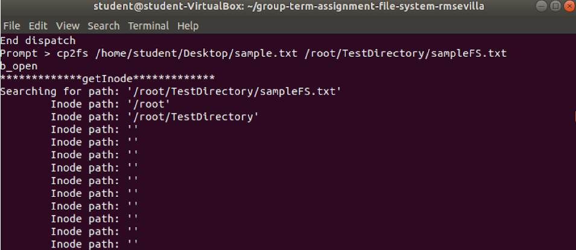

File System
This file system was created for an operating systems course in university. The goal was to recreate the Linux command line using C. It required to have a formatted volume, maintain a free space management system, initalize a root directory, maintain directory information, create, read, and delete files, and display info. We were provided a code base at the beginning of the project, where we were given a driver to test our file system, and functions to fill out in order to write to the disk. We were given the freedom to design how we wanted to maintain free space, and format the disk. Throughout the process we also learned about buffers, and volume/file control blocks, and how it plays a role in opening, reading, and writing into a file.
File system commands
ls - lists files in the directory
md - make a new directory
cd - changes directory

pwd - prints the working directory
help - prints out help
rm - removes file or directory
cp2fs - copies a file from the Linux file system to the test file system
